Malika Aubakirova ∗† ‡ ‡ ‡ †，Alex Atallah，Chris Clark，Justin Summerville，和 Anjney Midha
‡ † OpenRouter Inc. a16z (Andreessen Horowitz)
2025年12月
过去一年标志着大语言模型(LLM)演进和实际应用的转折点。随着首个被广泛采用的推理模型 o1 于 2024 年 12 月 5 日发布，该领域从单次模式生成转向多步骤推理推断(deliberation inference)，加速了部署、实验和新应用类别的出现。随着这一转变快速展开，我们对这些模型在实践中实际使用情况的实证理解却落后了。在本研究中，我们利用 OpenRouter 平台（一个跨多种 LLM 的 AI 推理提供商）分析了超过 100 万亿 token 的真实 LLM 交互数据，涵盖不同任务、地理区域和时间段。在我们的实证研究中，我们观察到开放权重模型的大量采用、创意角色扮演（不仅仅是许多人认为占主导地位的生产力任务）和编程辅助类别的超高人气，以及智能体推理(agentic inference)的兴起。此外，我们的留存分析识别出基础队列(foundational cohorts)：早期用户的参与度远远超过后期队列。我们将这一现象称为灰姑娘”玻璃鞋”效应。这些发现表明，开发者和最终用户在”野外”与 LLM 互动的方式是复杂且多方面的。我们讨论了对模型构建者、AI 开发者和基础设施提供商的影响，并概述了对使用情况的数据驱动理解如何为 LLM 系统的更好设计和部署提供信息。
就在一年前，大语言模型的格局看起来根本不同。在 2024 年底之前，最先进的系统由单次、自回归预测器主导，这些预测器经过优化以继续文本序列。一些前驱工作试图通过高级指令遵循和工具使用来近似推理。例如，Anthropic 的 Sonnet 2.1 和 3 模型在复杂的工具使用和检索增强生成(RAG)方面表现出色，Cohere 的 Command R 模型整合了结构化的工具规划 token。另外，像 Reflection 这样的开源项目在训练期间探索了监督思维链和自我批判循环。尽管这些先进技术产生了类似推理的输出和卓越的指令遵循能力，但基本的推理过程仍然基于单次前向传递，发出从数据中学习的表面级痕迹，而不是执行迭代的内部计算。
这一范式在 2024 年 12 月 5 日发生了演变，当时 OpenAI 发布了其 o1 推理模型的首个完整版本（代号 Strawberry）[4]。2024 年 9 月 12 日发布的预览版已经表明了与传统自回归推理的偏离。与之前的系统不同，o1 采用了扩展的推理时计算过程，涉及内部多步骤推理、潜在规划和迭代改进，然后才生成最终输出。从实证角度来看，这使得数学推理、逻辑一致性和多步骤决策方面的系统性改进成为可能，反映了从模式补全到结构化内部认知的转变。回顾过去，去年标志着该领域真正的拐点：早期方法暗示了推理，但 o1 引入了第一个广泛部署的架构，通过深思熟虑的多阶段计算执行推理，而不仅仅是描述它 [6, 7]。
∗ 主要贡献者。详情请参阅贡献部分。
尽管 LLM 能力的最新进展已被广泛记录，但关于这些模型在实践中实际使用情况的系统性证据仍然有限 [3, 5]。现有描述往往强调定性演示或基准性能，而非大规模行为数据。为了弥合这一差距，我们进行了一项 LLM 使用情况的实证研究，利用来自 OpenRouter 的 100 万亿 token 数据集，OpenRouter 是一个多模型 AI 推理平台，作为各种 LLM 查询的中心。
OpenRouter 的视角为细粒度使用模式提供了独特的窗口。因为它协调跨各种模型（包括闭源 API 和开放权重部署）的请求，OpenRouter 捕获了开发者和最终用户实际如何为各种任务调用语言模型的代表性横截面。通过分析这个丰富的数据集，我们可以观察到哪些模型被选择用于哪些任务，使用情况如何在地理区域和时间上变化，以及定价或新模型发布等外部因素如何影响行为。
在本文中，我们从之前的 AI 采用实证研究中汲取灵感，包括 Anthropic 的经济影响和使用分析 [1] 以及 OpenAI 的报告《人们如何使用 ChatGPT》[2]，旨在进行中立的、证据驱动的讨论。我们首先描述我们的数据集和方法论，包括我们如何对任务和模型进行分类。然后我们深入一系列分析，阐明使用的不同方面：
• 开源与闭源模型：我们研究开源模型相对于专有模型的采用模式，识别开源生态系统中的趋势和关键参与者。
• 智能体推理：我们调查多步骤、工具辅助推理模式的出现，捕捉用户如何越来越多地将模型作为更大自动化系统中的组件使用，而不是用于单轮交互。
• 类别分类法：我们按任务类别（如编程、角色扮演、翻译等）细分使用情况。
揭示应用领域驱动最多活动以及这些分布如何因模型提供商而异。
• 地理分布：我们分析全球使用模式并比较各大洲的LLM采用情况。这突显了区域因素和本地模型供应如何影响整体需求。
• 有效成本与使用动态：我们评估使用情况如何对应有效成本，捕捉LLM采用在实践中的经济敏感性。该指标基于平均输入加输出token，并考虑缓存效果。
• 留存模式：我们分析最广泛使用模型的长期留存情况，识别定义持久、更具粘性行为的基础群组。我们将其定义为灰姑娘”玻璃鞋”效应(Glass Slipper effect)，即用户需求与模型特性之间的早期契合创造了持久的适配性，从而维持长期参与度。
最后，我们讨论这些发现揭示了关于真实世界LLM使用的什么信息，突出意外模式并纠正一些误解。
我们的分析基于从OpenRouter平台收集的元数据，这是一个统一的AI推理层，将用户和开发者连接到数百个大型语言模型。OpenRouter上的每个用户请求都针对用户选择的模型执行，并记录描述结果”生成”事件的结构化元数据。本研究中使用的数据集包含来自全球用户群的数十亿次提示-补全对的匿名请求级元数据，涵盖截至撰写时约两年的时间。我们确实聚焦于最近一年。
至关重要的是，我们无法访问提示或补全的底层文本。我们的分析完全依赖于捕获每次生成的结构、时间和上下文的元数据，而不暴露用户内容。这种隐私保护设计实现了大规模行为分析。
每条生成记录包括时间、模型和提供商标识符、token使用情况以及系统性能指标的信息。Token计数包括提示(输入)和补全(输出)token，使我们能够测量整体模型工作负载和成本。元数据还包括与地理路由、延迟和使用上下文相关的字段(例如，请求是否被流式传输或取消，或是否调用了工具调用功能)。这些属性共同提供了模型在实践中如何使用的详细但非文本视图。
所有基于此元数据的分析、聚合和大多数可视化都使用Hex分析平台进行，该平台为版本化SQL查询、转换和最终图表生成提供了可复现的流水线。
我们强调，此数据集是观察性的：它反映了OpenRouter平台上的真实世界活动，而平台本身受模型可用性、定价和用户偏好的影响。截至2025年，OpenRouter支持来自60多家提供商的300多个活跃模型，服务数百万开发者和最终用户，超过50%的使用来自美国以外。虽然平台外的某些使用模式未被捕获，但OpenRouter的全球规模和多样性使其成为观察大规模LLM使用动态的代表性视角。
本研究无法直接访问用户提示或模型输出。相反，OpenRouter通过非专有模块GoogleTagClassifier对约占所有提示和响应0.25%的随机样本进行内部分类。虽然这仅代表总活动的一小部分，但考虑到OpenRouter处理的总查询量，基础数据集仍然相当可观。GoogleTagClassifier与Google Cloud Natural Language的classifyText内容分类API进行交互。该API对文本输入应用分层的、语言无关的分类法，返回一个或多个类别路径(例如，/Computers & Electronics/Programming，/Arts & Entertainment/Roleplaying Games)及相应的置信度分数，范围为$[0,1]$。分类器直接对提示数据(最多前1,000个字符)进行操作。分类器部署在OpenRouter的基础设施内，确保分类保持匿名且不与个别客户关联。置信度分数低于默认阈值0.5的类别被排除在进一步分析之外。分类系统本身完全在OpenRouter的基础设施内运行，并非本研究的一部分；我们的分析仅依赖于结果分类输出(有效地描述提示分类的元数据)，而非底层提示内容。
为了使这些细粒度标签在大规模上有用，我们将GoogleTagClassifier的分类法映射到一组紧凑的研究定义的类别桶(buckets)，并为每个请求分配标签。每个标签以一对一的方式汇总到更高级别的类别。代表性映射包括：
• 编程(Programming)：来自 /Computers & Electronics/Programming 或 /Science/Computer Science/*
• 角色扮演(Roleplay)：来自 /Games/Roleplaying Games 和 /Arts & Entertainment/* 下的创意对话分支
• 翻译(Translation)：来自 /Reference/Language Resources/*
• 通用问答/知识：来自 /Reference/General Reference/* 和 /News/*，当意图似乎是事实查找时
• 生产力/写作：来自 /Computers & Electronics/Software/Business & Productivity Software 或 /Business & Industrial/Business Services/Writing & Editing Services
• 教育(Education)：来自 /Jobs & Education/Education/*
• 文学/创意写作：来自 /Books & Literature/* 和 /Arts & Entertainment/* 下的叙事分支
• 成人内容(Adult)：来自 /Adult
• Others（其他）：用于没有主导映射的长尾提示。（注意：我们在下面的大多数分析中省略了这个类别。）
这种方法存在固有局限性，例如，依赖预定义的分类法(taxonomy)会限制新颖或跨领域行为的分类方式，某些交互类型可能尚未完全适配现有类别。实际上，当提示内容跨越重叠领域时，一些提示会收到多个类别标签。尽管如此，基于分类器的分类为我们提供了下游分析的视角（第5节）。这使我们不仅能够量化LLM的使用量，还能量化使用目的。
有几个变体值得明确说明：
• 开源 vs. 专有：如果模型权重公开可用，我们将其标记为开源（为简单起见，简称OSS），如果只能通过受限API访问（例如Anthropic的Claude），则标记为闭源。这种区分让我们能够衡量社区驱动模型与专有模型的采用情况。
• 来源（中国 vs. 世界其他地区）：鉴于中国LLM的兴起及其独特的生态系统，我们按主要开发地区标记模型。中国模型包括由中国大陆、台湾或香港的组织开发的模型（例如阿里巴巴的Qwen、Moonshot AI的Kimi或DeepSeek）。RoW（世界其他地区）模型涵盖北美、欧洲和其他地区。
• 提示令牌 vs. 补全令牌：我们区分提示令牌(prompt tokens)和补全令牌(completion tokens)。提示令牌代表提供给模型的输入文本，补全令牌代表模型生成的输出。总令牌等于提示令牌和补全令牌的总和。推理令牌(reasoning tokens)代表具有原生推理能力的模型中的内部推理步骤，包含在补全令牌中。
除非另有说明，令牌量是指提示（输入）和补全（输出）令牌的总和。
为了理解LLM使用的区域模式，我们按用户地理位置对请求进行分段。直接请求元数据（如基于IP的位置）通常不精确或已匿名化。相反，我们根据与每个账户关联的账单位置确定用户区域。这为用户地理位置提供了更可靠的代理，因为账单数据反映了与用户付款方式或账户注册相关的国家或地区。我们在区域采用和模型偏好分析中使用这种基于账单的分段（第6节）。
这种方法有局限性。一些用户使用第三方账单或共享的组织账户，这可能与他们的实际位置不符。企业账户可能在一个账单实体下汇总多个区域的活动。尽管存在这些不完美之处，但鉴于我们可以访问的元数据，账单地理位置仍然是隐私保护地理分析中最稳定和最可解释的可用指标。
我们的分析主要涵盖截至2025年11月的滚动13个月期间，但并非所有底层元数据都跨越这整个时间窗口。大多数模型级别和定价分析集中在2024年11月3日至2025年11月30日的时间范围内。然而，类别级别分析（特别是使用GoogleTag-Classifier分类法的分析，第2.2节）基于从2025年5月开始的较短时间间隔，反映了OpenRouter上一致标记可用的时间。特别是，详细的任务分类字段（例如编程、角色扮演或技术等标签）仅在2025年年中添加。因此，第5节中的所有发现应解释为代表2025年年中的使用情况，而不是整个前一年。
除非另有说明，所有时间序列汇总均使用UTC标准化时间戳按周计算，汇总提示令牌和补全令牌。这种方法确保了模型家族之间的可比性，并最大限度地减少了瞬时峰值或区域时区效应的偏差。
图1：开源 vs 闭源模型分布。按来源类型划分的总令牌量的周份额。浅蓝色阴影代表开放权重模型（中国 vs 世界其他地区），深蓝色对应专有（闭源）产品。垂直虚线标记关键开放权重模型的发布，包括Llama 3.3 70B、DeepSeek V3、DeepSeek R1、Kimi K2、GPT OSS系列和Qwen 3 Coder。
AI生态系统中的一个核心问题是开放权重（为简单起见，我们简称为OSS）和专有模型之间的平衡。图1和图2说明了过去一年OpenRouter上这种平衡是如何演变的。虽然专有模型，特别是来自北美主要供应商的模型，仍然提供大部分令牌服务，但OSS模型稳步增长，到2025年底达到约三分之一的使用量。
这种扩张不是偶然的。使用量激增与主要开源模型的发布一致，例如DeepSeek V3和Kimi K2（由垂直虚线标记），这表明像DeepSeek V3 [9] 和GPT OSS模型 [8] 这样的竞争性OSS发布被快速采用并保持增长。重要的是，这些增长在最初发布周之后仍然持续，这意味着是真正的生产使用，而不是短期实验。
这一增长的很大一部分来自中国开发的模型。从2024年底几乎可以忽略不计的基础（每周份额低至1.2%）开始，中国开源模型稳步获得关注，在某些周达到所有模型总使用量的近30%。在一年的窗口期内，它们平均约占每周token量的13.0%，强劲增长集中在2025年下半年。相比之下，世界其他地区(RoW)开源模型平均占13.7%，而世界其他地区专有模型保持最大份额（平均70%）。中国开源的扩张不仅反映了竞争性质量，还反映了快速迭代和密集的发布周期。像Qwen和DeepSeek这样的模型保持定期的模型发布，使其能够快速适应新兴工作负载。这种模式实质性地重塑了开源领域，并推进了整个LLM领域的全球竞争。
这些趋势表明LLM生态系统中存在持久的双重结构。专有系统继续定义可靠性和性能的上限，特别是对于受监管或企业工作负载。相比之下，开源模型提供成本效率、透明度和定制化，使其成为某些工作负载的有吸引力的选择。目前达到的平衡点大约在30%。这些模型
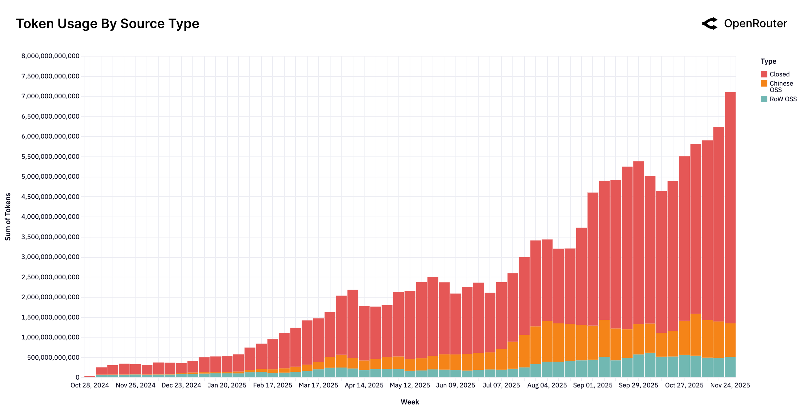
图2：按模型类型的每周token量。堆叠条形图显示随时间推移按模型类别的总token使用量。深红色对应专有模型（封闭），橙色代表中国开源模型（中国开源），青色表示中国以外开发的开源模型（世界其他地区开源）。该图突出显示了2025年开源token份额的逐步增加，特别是从年中开始的中国开源模型。
它们并不相互排斥；相反，它们在开发人员和基础设施提供商日益青睐的多模型堆栈中相互补充。
表1按提供的总token量对我们数据集中的顶级模型系列进行排名。开源模型的格局在过去一年发生了重大变化：虽然DeepSeek仍然是按量计算的最大单一开源贡献者，但随着新进入者迅速获得立足点，其主导地位已经减弱。如今，多个开源系列各自维持着大量使用，表明生态系统已经多样化。
表1：按模型作者的总token量（2024年11月至2025年11月）。token计数反映了OpenRouter上所有模型变体的总使用量。
| 模型作者 | 总Tokens（万亿） |
|---|---|
| DeepSeek | 14.37 |
| Qwen | 5.59 |
| Meta LLaMA | 3.96 |
| Mistral AI | 2.92 |
| OpenAI | 1.65 |
| Minimax | 1.26 |
| Z-AI | 1.18 |
| TNGTech | 1.13 |
| MoonshotAI | 0.92 |
| 0.82 |
图3说明了顶级个别开源模型每周市场份额的戏剧性演变。在该期间早期（2024年底），市场高度集中：来自DeepSeek系列的两个模型（V3和R1）持续占所有开源token使用量的一半以上，形成图表底部的大块深蓝色带。
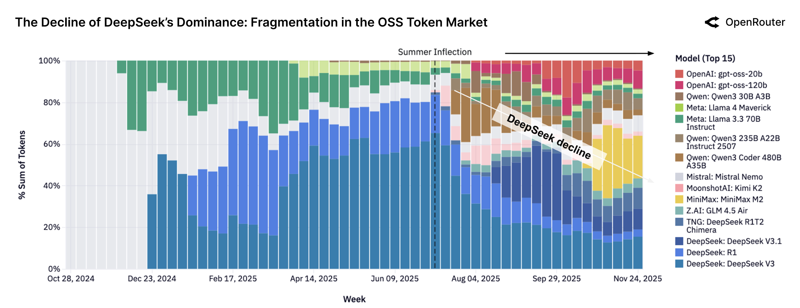
图3：随时间变化的前15个开源模型。领先开源模型的每周相对token份额（堆叠面积图）。每个彩色带代表一个模型对总开源tokens的贡献。随时间调色板的扩展表明，在最近几个月中，分布更具竞争性，没有单一主导模型。
这种近乎垄断的结构在夏季转折点（2025年中期）之后崩溃。此后市场变得更广泛和更深入，使用量显著多样化。像Qwen的模型、Minimax的M2、MoonshotAI的Kimi K2和OpenAI的GPT-OSS系列等新进入者都迅速增长，服务于大部分请求，通常在发布后几周内就实现了生产规模的采用。这表明开源社区和AI初创公司可以通过引入具有新颖能力或卓越效率的模型来实现快速采用。
到2025年底，竞争平衡已从近乎垄断转变为多元化组合。没有单一模型超过开源tokens的25%，token份额现在更均匀地分布在五到七个模型之间。实际意义是用户在更广泛的选项中找到价值，而不是默认一个”最佳”选择。虽然这个图表可视化了开源模型之间的相对份额（而非绝对量），但明确的趋势是向市场碎片化和开源生态系统内竞争加剧的决定性转变。
总体而言，开源模型生态系统现在高度动态。关键见解包括：
• 顶级多样性：曾经一个系列（DeepSeek）主导开源使用的地方，我们现在越来越多地看到六个模型各自维持有意义的份额。没有单一开放模型持续持有超过约20-25%的开源tokens。
• 新进入者的快速扩展：有能力的新开放模型可以在几周内获得显著使用。例如，MoonshotAI的模型迅速增长到与较老的开源领导者竞争，甚至像MiniMax这样的新来者在一个季度内从零增长到大量流量。这表明转换摩擦低，用户群渴望实验。
• 迭代优势：DeepSeek在顶部的持久存在强调了持续改进的关键性。DeepSeek的连续发布（Chat-V3、R1等）使其即使在挑战者出现时也保持竞争力。在开发中停滞的开源模型往往会将份额输给那些在前沿或特定领域微调方面频繁更新的模型。
如今，2025年的开源LLM竞技场类似于一个创新周期快速且领导地位不能保证的竞争生态系统。对于模型构建者来说，这意味着发布一个开放模型
具有最先进性能的模型可以立即获得用户采用，但维持使用份额需要持续投入进一步的开发。对于用户和应用开发者来说，这一趋势是积极的：有更丰富的开源模型可供选择，在特定领域（如角色扮演）通常具有与专有系统相当甚至有时更优越的能力。
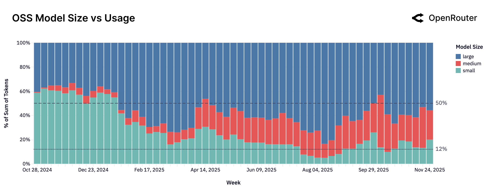
图4：开源模型规模与使用情况。小型、中型和大型模型提供的每周开源token总量份额。百分比按每周开源总使用量标准化。
一年前，开源模型生态系统主要是两个极端之间的权衡故事：大量小型快速模型和少数强大的大规模模型。然而，回顾过去一年揭示了市场的显著成熟以及一个新兴且不断增长的类别：中型模型。请注意，我们按以下参数数量对模型进行分类：
• 小型：参数少于150亿的模型。
• 中型：参数在150亿到700亿之间的模型。
• 大型：参数在700亿或更多的模型。
关于开发者和用户行为的数据告诉我们一个微妙的故事。图4和图5显示，虽然所有类别的模型数量都在增长，但使用情况发生了显著变化。小型模型正在失去青睐，而中型和大型模型正在获取这些价值。
深入了解推动这些趋势的模型揭示了独特的市场动态：
• “小型”市场：使用量整体下降。尽管有稳定的新模型供应，如图4所示，小型模型类别整体的使用份额正在下降。该类别的特点是高度碎片化。没有单一模型能长期占据主导地位，并且不断有来自Meta、Google、Mistral和DeepSeek等多样化提供商的新进入者涌现。例如，Google Gemma 3.12B（2025年8月发布）迅速被采用，但在一个拥挤的领域中竞争，用户不断寻求下一个最佳替代品。
• “中型”市场：找到”模型-市场契合度”。中型模型类别讲述了一个清晰的市场创建故事。该细分市场在2024年11月Qwen2.5 Coder 32B发布之前几乎可以忽略不计，该模型有效地建立了这一类别。随后随着Mistral Small 3（2025年1月）和GPT-OSS 20B（2025年8月）等其他强大竞争者的到来，该细分市场成熟为一个竞争性生态系统，这些模型开拓了用户心智份额。这一细分市场表明用户正在寻求能力和效率的平衡。
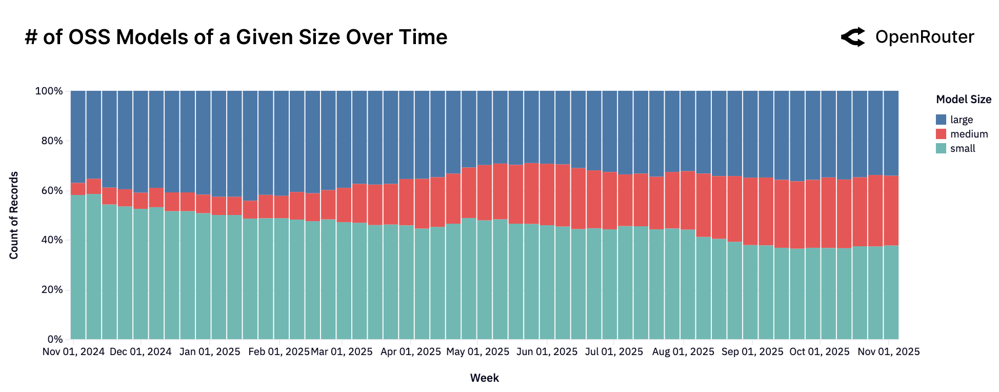
图5：随时间变化的开源模型按规模分类的数量。按参数规模类别分组的可用开源模型每周计数。
• “大型”模型细分：多元化格局。“追求质量”并未导致整合，而是导致了多样化。大型模型类别现在拥有一系列高性能竞争者，从Qwen3 235B A22B Instruct（2025年7月发布）和Z.AI GLM 4.5 Air到OpenAI: GPT-OSS-120B（8月5日）：每个都获得了有意义且持续的使用。这种多元化表明用户正在积极跨多个开放大型模型进行基准测试，而不是收敛于单一标准。
小型模型主导开源生态系统的时代可能已经过去。市场现在正在分化，用户要么倾向于新的、强大的中型模型类别，要么将他们的工作负载整合到单一最强大的大型模型上。
当今的开源模型被应用于范围非常广泛的任务，涵盖创意、技术和信息领域。虽然专有模型在结构化业务任务中仍占主导地位，但开源模型在两个特定领域开辟出了领先地位：创意角色扮演和编程辅助。
这些类别合计占开源token使用量的大部分（图6）。
图6突出显示，所有开源模型使用量的一半以上属于角色扮演，编程是第二大类别。这表明用户主要将开源模型用于创意互动对话（如讲故事、角色扮演和游戏场景）以及编程相关任务。角色扮演的主导地位（占所有开源token的50%以上）凸显了一个开源模型具有优势的用例：它们可以用于创造力，并且通常较少受到内容过滤器的限制，使其对幻想或娱乐应用具有吸引力。角色扮演任务需要灵活的响应、上下文保留和情感细微差别——开源模型可以有效地提供这些属性，而不会受到商业安全或审核层的严格限制。这使它们对于尝试角色驱动体验、同人小说、互动游戏和模拟环境的社区特别有吸引力。
编程部分（大约15-20%）显示，许多开发者利用开源模型进行代码生成和调试，这可能是由于像Qwen-Coder、GPT-OSS系列和GLM-4.6这样非常有能力的代码模型。翻译、知识问答和教育等其他类别占据较小份额但不可忽视，每个都满足特定需求（多语言支持、事实查询、辅导等）。一个限制是分类可能会混淆一些重叠的用途（例如，互动编程教程可能根据提示框架被标记为教育或编程），但总体而言，该图表清楚地表明了开源模型在实践中擅长的领域。
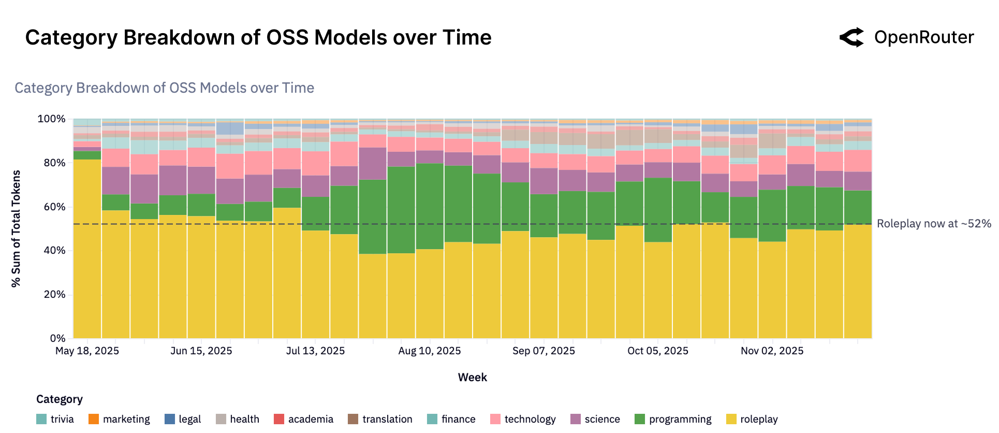
图6：开源模型的类别趋势。开源模型使用在高级任务类别中的分布。角色扮演（约52%）和编程始终主导着开源工作负载组合，两者合计占据了开源令牌的大部分。较小的部分包括翻译、常识问答和其他类别。
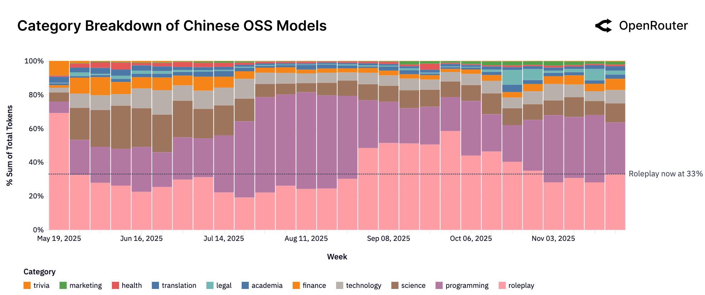
图7：中国开源模型的类别趋势。中国开发的开源模型中的类别构成。角色扮演仍然是最大的单一用例，尽管编程和技术在这里合计占据的比例比整体开源组合中更大（33%对比38%）。
图7显示了如果我们只关注中国开源模型时随时间变化的类别细分。这些模型不再主要用于创意任务。角色扮演仍然是最大的类别，约占33%，但编程和技术现在合计占据了使用量的大多数（39%）。这种转变表明，像Qwen和DeepSeek这样的模型越来越多地用于代码生成和基础设施相关的工作负载。虽然高容量企业用户可能会影响特定细分市场，但整体趋势表明中国开源模型正在技术和生产力领域直接竞争。
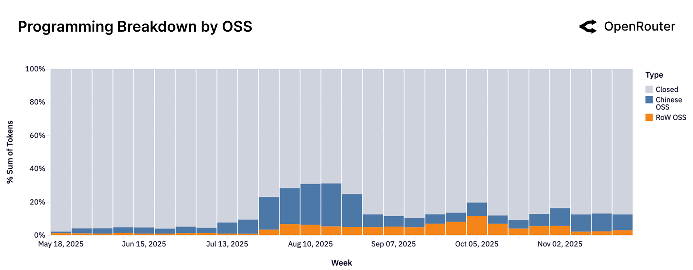
图8：按模型来源划分的编程查询。专有模型与中国开源模型及非中国（其他地区）开源模型处理的编程相关令牌量份额。在开源部分中，天平在2025年末显著向其他地区开源模型倾斜，现在占所有开源编码令牌的一半以上（在早期中国开源模型主导开源编码使用之后）。
如果我们只关注编程类别，我们在图8中观察到，专有模型仍然处理大部分编码辅助工作（灰色区域），反映了像Anthropic的Claude这样的强大产品。然而，在开源部分内，出现了显著的转变：在2025年中期，中国开源模型（蓝色）提供了大部分开源编码帮助（受Qwen 3 Coder等早期成功的推动）。到2025年第四季度，西方开源模型（橙色）如Meta的LLaMA-2 Code和OpenAI的GPT-OSS系列激增，但在最近几周的整体份额有所下降。这种波动表明了一个竞争非常激烈的环境。实际结论是，开源代码助手的使用是动态的，并对新模型质量高度敏感：开发者对当前提供最佳编码支持的开源模型持开放态度。作为限制，这个图表没有显示绝对数量：开源编码使用整体增长，因此蓝色带的缩小并不意味着中国开源模型失去了用户，只是相对份额减少。
现在如果我们只检查角色扮演流量，我们在图9中看到，它现在几乎平均由其他地区开源模型（橙色，最近几周为43%）和闭源（灰色，最近为42%）模型提供服务。这代表了与2025年早期的重大转变，当时该类别由专有（灰色）模型主导，占据了约70%的令牌份额。在那时（2025年5月），西方开源模型仅占流量的22%，而中国开源（蓝色）模型占据8%的小份额。全年中，专有模型份额稳步下降。到2025年10月底，随着西方和中国开源模型都获得显著增长，这一趋势加速。
由此产生的趋同表明了健康的竞争；用户在创意聊天和讲故事方面从开源和专有产品中都有可行的选择。这反映了开发者认识到对角色扮演/聊天模型的需求，并针对这一目标定制了他们的发布（例如，在对话上进行微调，添加对齐以保持角色一致性）。需要注意的是，“角色扮演”涵盖了一系列子类型（从休闲聊天到复杂的游戏场景）。然而从宏观角度来看，显然开源模型在这个创意领域具有优势。
解释。从广义上讲，在整个开源生态系统中，关键用例是：角色扮演和创意对话：最大的类别，可能是因为开源模型可以不受审查或更容易定制用于虚构角色和故事任务。编程辅助：第二大类别，并且在增长，因为开源模型在代码方面变得更加胜任。许多开发者在本地利用开源模型进行编码以避免API成本。翻译和多语言支持：稳定的用例，特别是有强大的双语模型可用（中国开源模型在这里具有优势）。常识问答和教育：中等使用量；虽然开源模型可以回答问题，但用户可能更喜欢像GPT-5这样的闭源模型以获得最高的事实准确性。
值得注意的是，开源使用模式（角色扮演占主导）反映了许多人可能认为的”爱好者”或”独立开发者”领域——定制化和成本效益优于绝对准确性的领域。不过，界限正在模糊：开源模型在技术领域正在快速改进，专有模型也被创造性地使用。
[4] [代理推理(Agentic Inference)的崛起]
在前一节中，我们探讨了不断演变的模型格局（开源与闭源）。现在，我们将关注大语言模型(LLM)使用本身的根本形态。生产环境中语言模型的使用方式正在发生根本性转变：从单轮文本生成转向多步骤、集成工具和密集推理的工作流。我们将这一转变称为智能推理(agentic inference)的崛起，在这种模式下，模型的部署不仅仅是为了生成文本，而是通过规划、调用工具或在扩展上下文中进行交互来采取行动。本节通过五个指标来追踪这一转变：推理模型的兴起、工具调用行为的扩展、序列长度特征的变化，以及编程使用如何驱动复杂性。
如图10所示，通过推理优化模型路由的令牌(token)总份额在2025年急剧攀升。在第一季度初几乎可以忽略不计的使用量，现在已经超过了百分之五十。这一转变反映了市场的两个方面。在供给方面，GPT-5、Claude 4.5和Gemini 3等更高能力系统的发布，扩展了用户对逐步推理的期望。在需求方面，用户越来越倾向于能够管理任务状态、遵循多步骤逻辑并支持智能体(agent)风格工作流的模型，而不仅仅是生成文本。
图11显示了推动这一转变的顶级模型。在最新数据中，xAI的Grok Code Fast 1现在驱动了最大份额的推理流量（不包括免费启动访问），领先于谷歌的Gemini 2.5 Pro和Gemini 2.5 Flash。这与几周前的情况有显著变化，当时Gemini 2.5 Pro领导该类别，DeepSeek R1和Qwen3也处于顶级梯队。Grok Code Fast 1和Grok 4 Fast
图10：推理与非推理令牌趋势。通过推理优化模型路由的所有令牌份额自2025年初以来稳步上升。该指标反映了推理模型服务的所有令牌比例，而不是模型输出中”推理令牌”的份额。
迅速获得了份额，这得益于xAI的积极推出、有竞争力的定价，以及开发者对其面向代码变体的关注。与此同时，像OpenAI的gpt-oss-120b这样的开源模型的持续存在，强调了开发者在可能的情况下仍然会选择开源软件(OSS)。总体而言，这种组合突显了推理领域变得多么动态，快速的模型更替正在塑造哪些系统主导实际工作负载。
数据指向一个明确的结论：面向推理的模型正在成为实际工作负载的默认路径，流经它们的令牌份额现在是用户如何与AI系统交互意愿的领先指标。
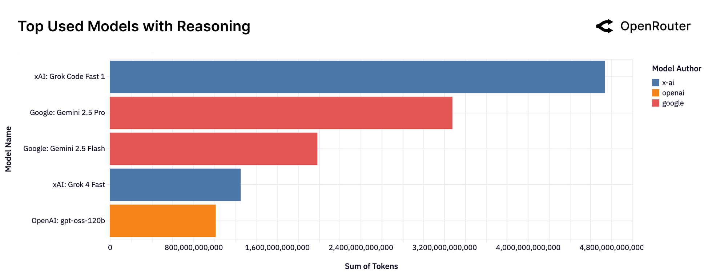
图11：按令牌量排名的顶级推理模型。在推理模型中，xAI的Grok Code Fast 1目前处理最大份额的推理相关令牌流量，其次是谷歌的Gemini 2.5 Pro和Gemini 2.5 Flash。xAI的Grok 4 Fast和OpenAI的gpt-oss-120b组成了顶级组。
在图12中，我们报告了源自完成原因(finish reason)为工具调用(Tool Call)的请求的令牌总份额。该指标经过标准化处理，仅捕获那些实际调用了工具的交互。
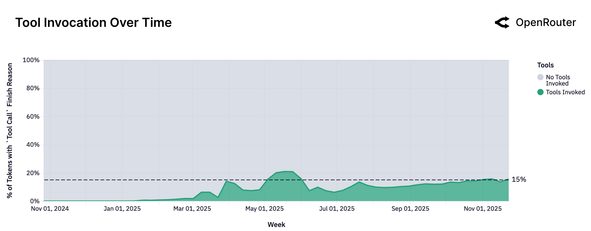
图12：工具调用。总令牌份额标准化为完成原因被分类为工具调用的请求，意味着在请求期间实际调用了工具。该指标反映了成功的工具调用；包含工具定义的请求数量按比例更高。
这与输入工具(Input Tool)信号形成对比，后者记录在请求期间是否向模型提供了工具（无论是否调用）。根据定义，输入工具计数高于工具调用完成原因，因为提供是成功执行的超集。完成原因指标衡量实现的工具使用，而输入工具反映潜在可用性而非实际调用。由于该指标仅在2025年9月引入，我们在本文中不报告它。
图12中5月的显著峰值主要归因于一个大型账户的活动短暂提升了整体量。除了这个异常，工具采用在全年显示出一致的上升趋势。
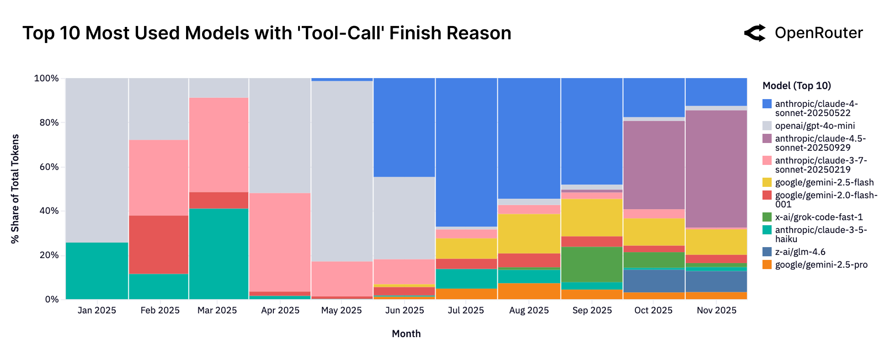
图13：按提供工具量排名的顶级模型。工具提供集中在明确为智能推理优化的模型中，如Claude Sonnet、Gemini Flash。
如图13所示，工具调用最初集中在一小组模型中：OpenAI的gpt-4o-mini和Anthropic的Claude 3.5和3.7系列，它们在2025年初共同占据了大部分启用工具的令牌。然而，到年中，更广泛的模型集开始支持工具提供，反映出更具竞争性和多样化的生态系统。从9月底开始，较新的Claude 4.5 Sonnet模型迅速获得份额。与此同时，像Grok Code Fast和GLM 4.5这样的新进入者已经取得了显著进展，反映了在支持工具部署方面更广泛的实验和多样化。
对于运营商来说，含义很明确：启用工具使用在高价值工作流中正在上升。没有可靠工具格式的模型在企业采用和编排环境中有落后的风险。
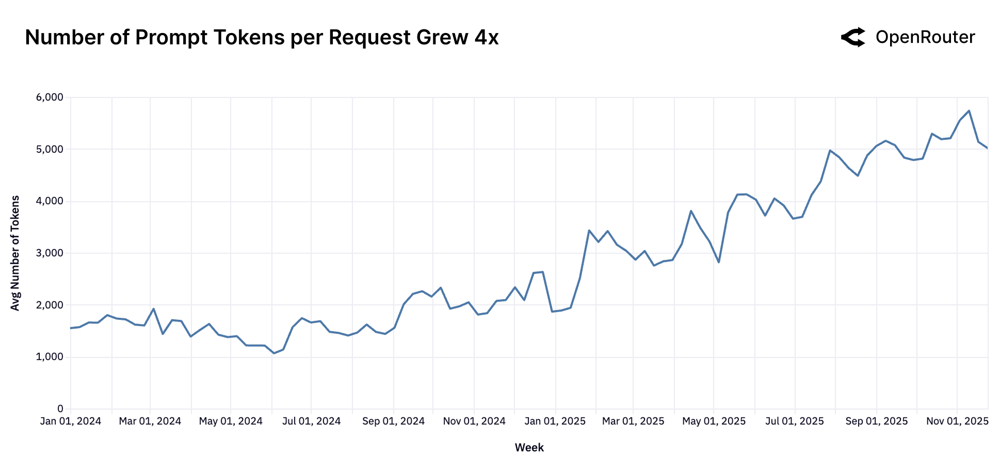
图14：提示令牌数量正在上升。自2024年初以来，平均提示令牌长度增长了近四倍，反映出上下文密集型工作负载的增加。
模型工作负载的特征在过去一年发生了显著变化。提示词(prompt)（输入）和补全(completion)（输出）的token数量都急剧上升，尽管规模和速率不同。每个请求的平均提示词token从约1.5K增长了大约四倍至超过6K，而补全从约150增长到400 token，几乎增长了三倍。增长幅度的相对差异突显了向更复杂、上下文更丰富的工作负载的决定性转变。
这种模式反映了模型使用的新均衡状态。如今典型的请求不再是开放式生成（“给我写篇文章”），而更多是对用户提供的大量材料进行推理，如代码库、文档、转录文本或长对话，并产生简洁、高价值的见解。模型越来越多地充当分析引擎而非创意生成器。
分类级数据（仅从2025年春季开始提供，见第[2.5]节）提供了更细致的视角：编程工作负载是提示词token增长的主要驱动力。涉及代码理解、调试和代码生成的请求通常超过20K输入token，而所有其他类别保持相对平稳和低量。这种不对称的贡献表明，最近提示词大小的扩展并非跨任务的统一趋势，而是与软件开发和技术推理用例相关的集中激增。
[4.4] [更长的序列，更复杂的交互]
序列长度是任务复杂性和交互深度的代理指标。图[17]显示，在过去20个月中，平均序列长度增长了三倍多，从2023年末的不足2,000 token增长到2025年末的超过5,400。这种增长反映了向更长上下文窗口、更深任务历史和更复杂补全的结构性转变。
如前一节所述，图[18]进一步明确：编程相关提示词现在的平均token长度是通用提示词的3-4倍。这种差异表明软件开发工作流程是更长交互的主要驱动力。长序列不仅仅是用户的冗长：它们是嵌入式、更复杂的智能体(agentic)工作流程的标志。
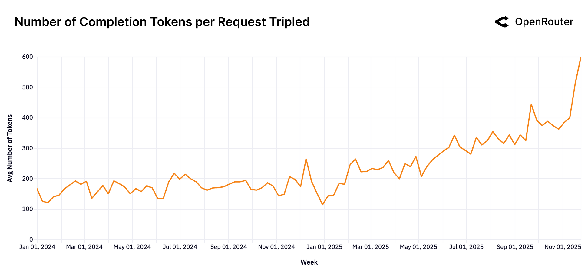
图15：补全Token数量几乎增长了三倍。输出长度也有所增加，尽管基线较小，这表明响应更丰富、更详细，主要是由于推理token。
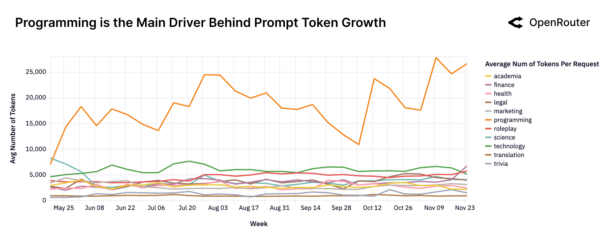
图16：编程是提示词Token增长背后的主要驱动力。自2025年春季标签可用以来，编程相关任务一直需要最大的输入上下文。
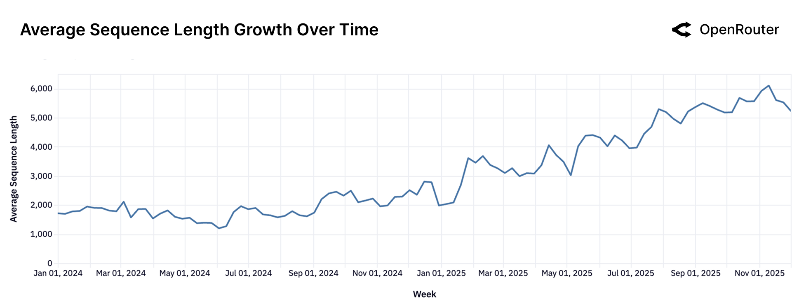
图17：随时间变化的平均序列长度。每次生成的平均token数（提示词+补全）。
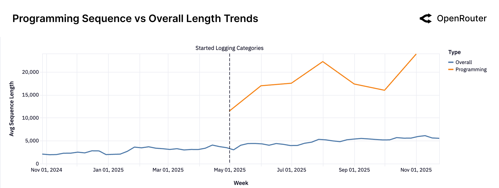
图18：编程中的序列长度与总体对比。编程提示词系统性地更长且增长更快。
[4.5] [影响：智能体推理成为新默认]
综合来看，这些趋势（推理份额上升、工具使用扩展、序列更长以及编程的超大复杂性）表明LLM使用的重心已经转移。中位数的LLM请求不再是简单的问题或孤立的指令。相反，它是结构化、类智能体循环的一部分，调用外部工具，对状态进行推理，并在更长的上下文中持续存在。
对于模型提供商而言，这提高了默认能力的标准。延迟、工具处理、上下文支持以及对格式错误或对抗性工具链的鲁棒性变得越来越关键。对于基础设施运营商，推理平台现在必须管理的不仅仅是无状态请求，还包括长时间运行的对话、执行轨迹和权限敏感的工具集成。很快，如果不是已经发生，智能体推理将接管大部分推理工作。
[5] [类别：人们如何使用LLM？]
了解用户使用LLM执行的任务分布对于评估真实世界需求和模型-市场契合度至关重要。如第[2.2]节所述，我们将数十亿次模型交互分类为高级应用类别。在第[3.3]节中，我们关注开源模型以了解社区驱动的使用情况。在这里，我们将视野扩大到OpenRouter上的所有LLM使用（包括闭源和开源模型），以全面了解人们在实践中如何使用LLM。
[5.1] [主导类别]
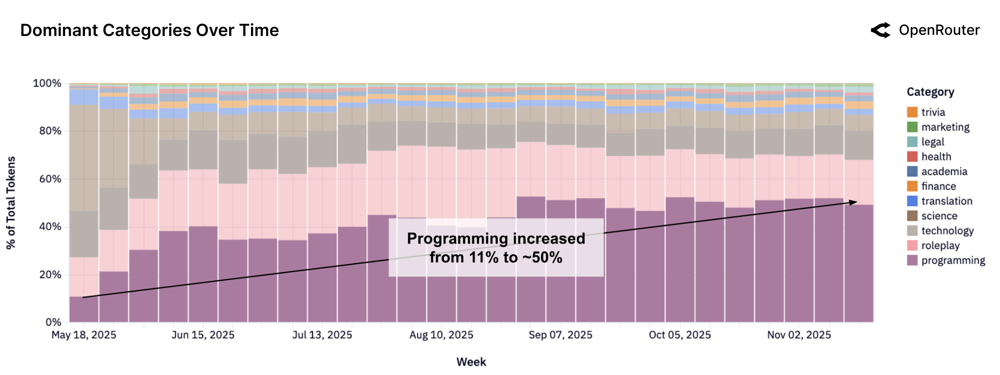
图19：编程作为主导且不断增长的类别。归类为编程的LLM查询份额稳步增长，反映了AI辅助开发工作流程的兴起。
编程已成为所有模型中最持续扩展的类别。编程相关请求的份额在2025年稳步增长，与LLM辅助开发环境和工具集成的兴起并行。如图[19]所示，编程查询在2025年初约占总token量的11%，最近几周超过了50%。这一趋势反映了从探索性或对话式使用向应用型任务（如代码生成、调试和数据脚本编写）的转变。随着LLM嵌入开发者工作流程，它们作为编程工具的角色正在被标准化。这一演变对模型开发具有影响，包括更加强调以代码为中心的训练数据、改进多步骤编程任务的推理深度，以及模型与集成开发环境之间更紧密的反馈循环。
对编程支持不断增长的需求正在重塑模型提供商之间的竞争动态。如图[20]所示，Anthropic的Claude系列一直主导该类别，在大部分观察期间占编程相关支出的60%以上。然而，格局已经发生了有意义的演变。在11月17日这一周，Anthropic的份额降至60%以下。
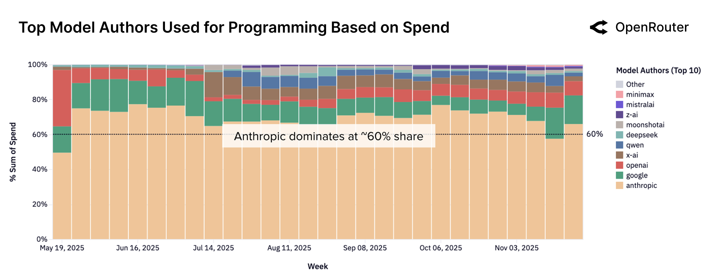
图20：各模型提供商编程请求占比。编程工作负载高度集中：Anthropic的模型服务了最大份额的编程查询，其次是OpenAI和Google，MiniMax的份额正在增长。其他提供商合计仅占一小部分。此图省略了xAI，该服务在一段时间内有大量使用但当时是免费提供的。
首次达到阈值。自7月以来，OpenAI的份额从约2%扩大到最近几周的约8%，这可能反映了对以开发者为中心的工作负载的重新重视。在同一时间段内，Google的份额稳定在约15%。中间层段也在变动。包括Z.AI、Qwen和Mistral AI在内的开源提供商正在稳步获得关注度。特别是MiniMax，已成为快速崛起的新进入者，在最近几周显示出显著增长。
总体而言，编程已成为竞争最激烈、战略上最重要的模型类别之一。它吸引了顶级实验室的持续关注，即使模型质量或延迟的微小变化也可能每周改变份额。对于基础设施提供商和开发者来说，这突显了持续基准测试和评估的必要性，特别是在前沿领域不断演进的情况下。
图21展示了LLM在十二个最常见内容类别中的使用情况分布，揭示了每个类别的内部子主题结构。一个关键要点是，大多数类别的分布并不均匀：它们被一两个重复出现的使用模式所主导，这通常反映了集中的用户意图或与LLM优势的契合。
在最高流量的类别中，角色扮演因其一致性和专业化而突出。近60%的角色扮演token属于游戏/角色扮演游戏，这表明用户将LLM更多地视为结构化的角色扮演或角色引擎，而非休闲聊天机器人。作家资源(15.6%)和成人内容(15.4%)的存在进一步强化了这一点，指向互动小说、场景生成和个人幻想的融合。与角色扮演主要是非正式对话的假设相反，数据显示了一个定义明确且可复制的基于类型的用例。
编程同样存在偏向，超过三分之二的流量被标记为编程/其他。这表明代码相关提示的广泛和通用性质：用户并非狭隘地关注特定工具或语言，而是向LLM询问从逻辑调试到脚本起草的所有内容。尽管如此，开发工具(26.4%)和脚本语言的小份额表明了新兴的专业化。这种碎片化突显了模型构建者改进围绕结构化编程工作流的标记或训练的机会。
除了角色扮演和编程的主导类别之外，其余领域代表了LLM使用的多样化但低流量的长尾。虽然单独看规模较小，但它们揭示了用户如何在专业化和新兴任务中与模型交互的重要模式。例如，翻译、科学和健康显示出相对平坦的内部结构。在翻译中，使用几乎平均分配在外语之间
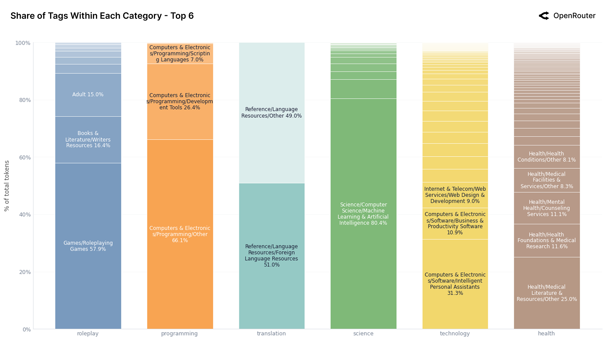
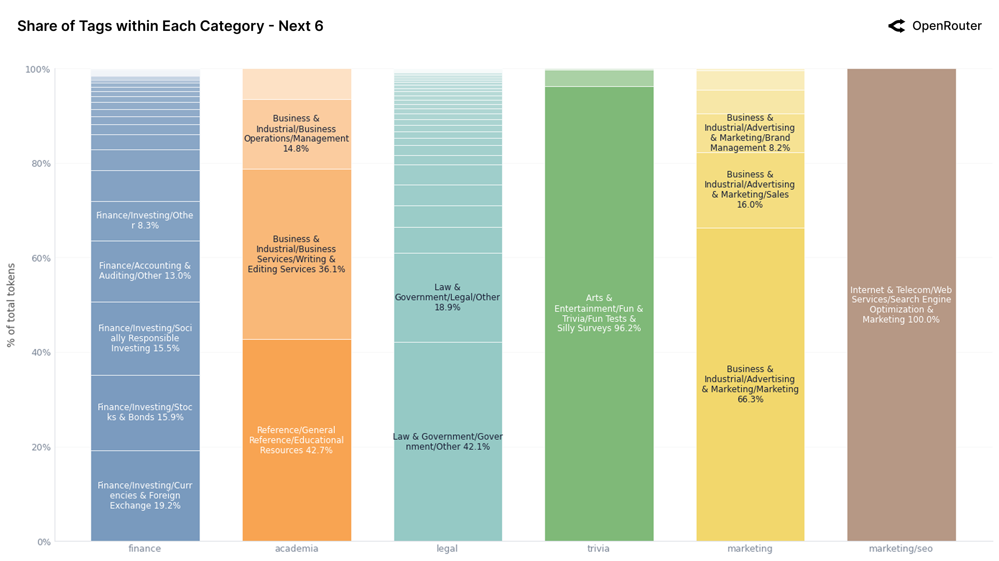
图21：每个类别内按子标签的token份额。图表涵盖了总体排名前十二的类别，为便于阅读分为两个面板。每列是标签级份额的100%堆叠条形图，揭示了每个类别使用情况的内部构成。
语言资源(51.1%)和其他，这表明分散的需求：多语言查找和改写，而非持续的文档级翻译。科学由单一标签主导，即机器学习与AI(80.4%)，表明大多数科学查询是元AI问题，而非物理或生物等一般STEM主题。这反映了用户兴趣或模型优势偏向自我指涉的探究。
相比之下，健康是顶级类别中最分散的，没有子标签超过25%。Token分散在医学研究、咨询服务、治疗指导和诊断查询中。这种多样性突显了该领域的复杂性，但也带来了安全建模的挑战：LLM必须跨越高方差的用户意图，通常是在敏感环境中，而没有明确集中在单一用例上。
将这些长尾类别联系起来的是它们的广泛性：用户转向LLM进行探索性、轻度结构化或寻求帮助的交互，但没有编程或个人助理中所见的集中工作流。总的来说，这些次要类别可能不会主导流量，但它们暗示了潜在需求。它们表明LLM正在从翻译到医疗指导再到AI内省等许多领域的边缘被使用，随着模型在领域稳健性和工具集成方面的改进，我们可能会看到这些分散的意图汇聚成更清晰、更高流量的应用。
相比之下，金融、学术和法律则要分散得多。金融将其流量分散在外汇、社会责任投资和审计/会计中：没有单一标签突破20%。法律显示出类似的熵，使用在政府/其他(43.0%)和法律/其他(17.8%)之间分配。这种碎片化可能反映了这些领域的复杂性，或者仅仅是与编程和聊天等更成熟的类别相比，缺乏针对性的LLM工作流。
数据表明，现实世界中的 LLM 使用并非均匀分布于探索性任务：它紧密聚集在少数可重复的高频任务上。角色扮演(Roleplay)、编程(Programming)和个人助理(Personal assistance)都表现出清晰的结构和主导标签。相比之下，科学、健康和法律领域则更加分散，优化程度可能不足。这些内部分布可以指导模型设计、领域特定的微调(fine-tuning)和应用层接口——特别是在根据用户目标定制 LLM 方面。
不同的模型作者在不同的使用模式中被采用。图 [22a–][23a] 显示了三个主要模型家族(Anthropic 的 Claude、Google 的模型和 OpenAI 的 GPT 系列)的内容类别分布。每个条形图代表该提供商 100% 的令牌(token)使用量,按主要标签细分。
Anthropic 的 Claude(图 [22a])严重偏向编程+技术用途,两者合计超过其使用量的 80%。角色扮演和一般问答只占很小一部分。这证实了 Claude 作为一个针对复杂推理、编码和结构化任务优化的模型的定位；开发者和企业似乎主要将 Claude 用作编程助手和问题解决工具。
Google 的模型使用(图 [22b])更加多样化。我们看到翻译、科学、技术和一些常识性知识的显著部分。例如,Google 使用量的 5% 是法律或政策内容,另有 10% 与科学相关。这可能暗示了 Gemini 广泛的训练重点。与其他模型相比,Google 的编程份额相对较少,实际上到 2025 年末还在下降(降至约 18%),类别分布的长尾更长。这表明 Google 的模型更多被用作通用信息引擎。
xAI 的使用概况(图 [22c])与其他提供商截然不同。在大部分时期,使用量绝大部分集中在编程上,通常超过所有令牌的 80%。直到 11 月末,分布才开始扩大,技术、角色扮演和学术领域出现明显增长。这一急剧转变与 xAI 的模型通过特定消费应用免费分发的时间相吻合,这可能引入了大量非开发者流量。结果是一种使用构成,将早期以开发者为主的核心与突然涌入的通用参与浪潮相结合,表明 xAI 的采用路径既受技术用户塑造,也受与促销可用性相关的阶段性激增影响。
OpenAI 的使用概况(图 [23a])在 2025 年发生了显著变化。年初,科学任务占 OpenAI 令牌总量的一半以上；到 2025 年末,这一份额已降至 15% 以下。与此同时,与编程和技术相关的使用现在占总量的一半以上(各占 29%),反映出与开发者工作流程、生产力工具和专业应用的更深度集成。OpenAI 的使用构成现在介于 Anthropic 的高度集中概况和 Google 的更分散分布之间,表明具有广泛的实用基础,并日益倾向于高价值的结构化任务。
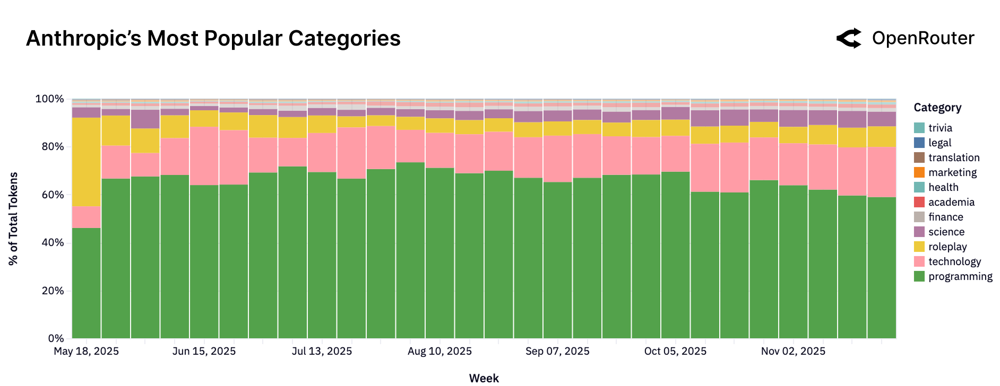
[(a)] [Anthropic.] [主要用于编程和技术任务(超过 80%),角色扮演使用极少。]
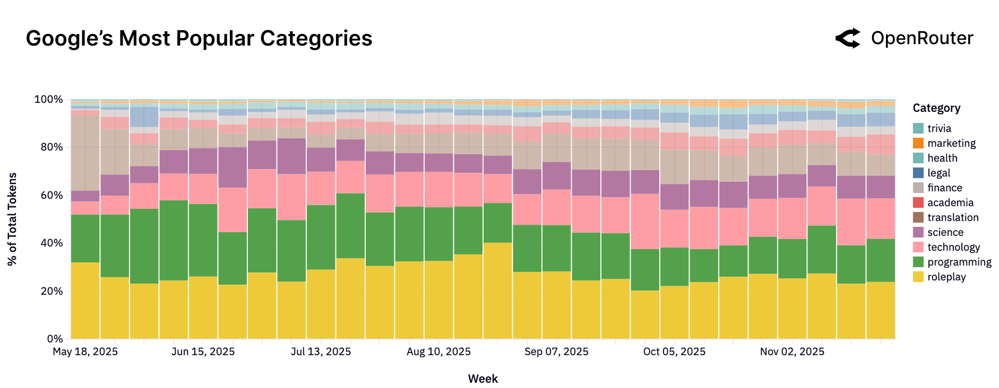
[(b)] [Google.] [广泛的使用构成,涵盖法律、科学、技术和一些常识性知识查询。]
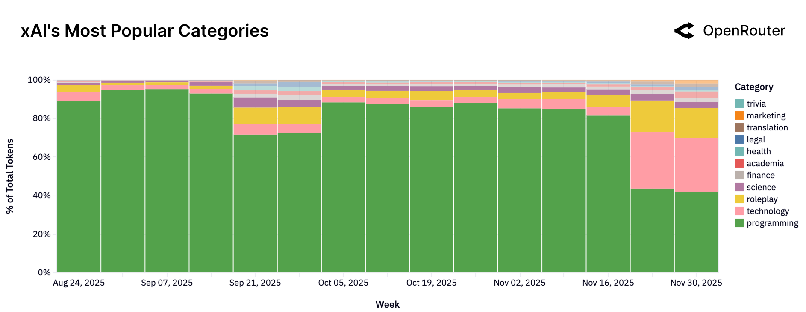
[(c)] [xAI.] [令牌使用主要集中在编程上,技术、角色扮演和学术在 11 月末更加突出。]
图 22: 主要模型提供商的顶级内容类别(按提供商令牌使用份额)。每个条形图说明了提供商的使用如何在各类别间分布,突出了专业化和随时间的变化。
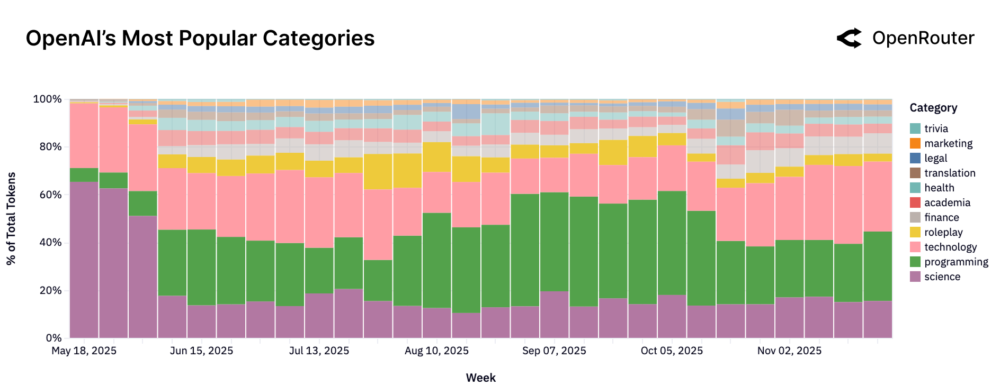
[(a)] [OpenAI.] [随时间推移转向编程和技术任务,角色扮演和休闲聊天显著减少。]
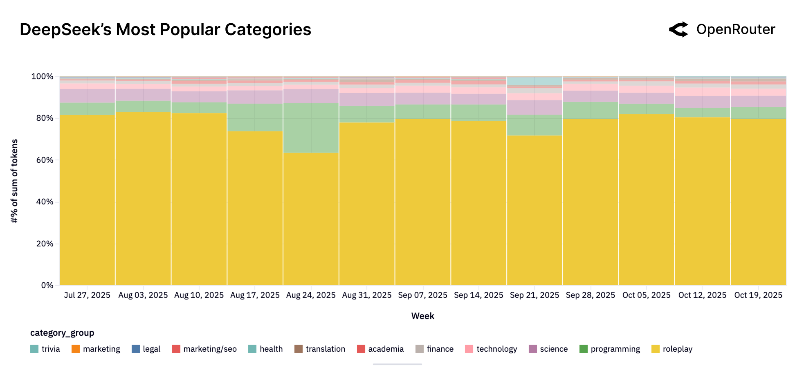
[(b)] [DeepSeek.] [使用主要集中在角色扮演和休闲互动。]
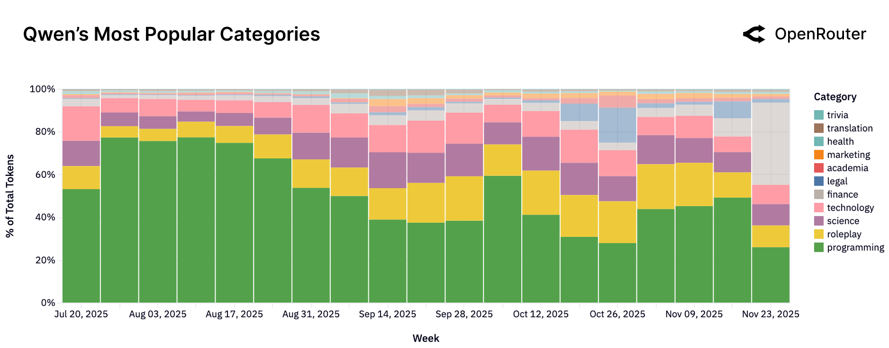
[(c)] [Qwen.] [强烈集中在编程任务,角色扮演和科学类别随时间波动。]
图 23: 按提供商令牌使用份额的顶级内容类别。图 [22] 的延续。
如图 [23] 所示,DeepSeek 和 Qwen 表现出与前面讨论的其他模型家族明显不同的使用模式。DeepSeek 的令牌分布主要集中在角色扮演、休闲聊天和娱乐导向的互动上,通常占其总使用量的三分之二以上。只有一小部分活动属于编程或科学等结构化任务。这种模式反映了 DeepSeek 强烈的消费者导向及其作为高参与度对话模型的定位。值得注意的是,DeepSeek 在夏末显示出编程相关使用的适度但稳定增长,表明在轻量级开发工作流程中的逐步采用。
相比之下,Qwen 呈现出几乎相反的概况。在图 [23] 所示的整个期间,编程始终占所有令牌的 40-60%,表明明确强调技术和开发者任务。与 Anthropic 更稳定的工程密集型构成相比,Qwen 在科学、技术和角色扮演等相邻类别中表现出更高的波动性。这些每周的变化暗示了异质的用户群体和应用用例的快速迭代。9 月和 10 月角色扮演使用的明显上升,随后在 11 月的收缩,暗示了用户行为的演变或下游应用路由的调整。
总之，每个提供商都呈现出与其战略重点一致的独特特征。这些差异凸显了为什么没有单一模型或提供商能够最优地覆盖所有用例；同时也强调了多模型生态系统的潜在优势。
全球LLM使用表现出明显的地区差异。通过检查地理分布，我们可以推断本地使用和支出如何塑造LLM使用模式。虽然下图反映的是OpenRouter的用户群，但它们提供了地区参与度的一个快照。
如图24所示，支出分布凸显了AI推理市场日益全球化的性质。北美虽然仍是最大的单一地区，但在大部分观察期内占总支出的比例不到一半。欧洲表现出稳定而持久的贡献。其在每周支出中的相对份额在整个时间线上保持一致，通常占据在十几到二十几之间的区间。一个值得注意的发展是亚洲的崛起，不仅作为前沿模型的生产者，也作为快速扩张的消费者。在数据集的最早几周，亚洲约占全球支出的13%。随着时间推移，这一份额增加了一倍多，在最近时期达到约31%。
图24：不同世界地区随时间的支出量。每个大洲在全球使用中所占的每周份额。
如表2所示，英语占据主导地位，占所有token的80%以上。这既反映了英语模型的普及性，也反映了OpenRouter用户群以开发者为中心的倾斜。然而，其他语言，特别是中文、俄语和西班牙语，构成了有意义的长尾。仅简体中文就占全球token的近5%，这表明双语或中文优先环境中的用户持续参与，特别是考虑到DeepSeek和Qwen等中国开源模型的增长。
表2：按语言划分的token量。语言基于OpenRouter所有流量中检测到的提示语言。
| 语言 | Token份额(%) |
|---|---|
| 英语 | 82.87 |
| 简体中文 | 4.95 |
| 俄语 | 2.47 |
| 西班牙语 | 1.43 |
| 泰语 | 1.03 |
| 其他(合计) | 7.25 |
对于模型构建者和基础设施运营商来说，跨地区可用性，包括跨语言、合规制度和部署设置，正在成为一个LLM采用同时具有全球性和本地优化特点的世界中的基本要求。
这组留存图表(图25)捕捉了主流模型在LLM用户市场中的动态。乍一看，数据主要表现为高流失率和快速的队列(cohort)衰减。然而在这种波动性之下隐藏着一个更微妙且更重要的信号：一小部分早期用户队列随时间表现出持久的留存。我们将这些称为基础队列(foundational cohorts)。
这些队列不仅仅是早期采用者；它们代表了那些工作负载已经实现了深度且持久的工作负载-模型契合(workload-model fit)的用户。一旦建立，这种契合会创造经济和认知惯性(inertia)，抵制替换，即使有更新的模型出现。
我们引入灰姑娘玻璃鞋效应作为描述这一现象的框架。该假设认为，在快速发展的AI生态系统中，存在一个潜在的高价值工作负载分布，这些工作负载在连续的模型代际中仍未解决。每个新的前沿模型实际上都在针对这些未解决的问题进行”试穿”。当一个新发布的模型恰好匹配了一个以前未满足的技术和经济约束时，它就实现了精确契合——隐喻的”玻璃鞋”。
对于那些工作负载最终”契合”的开发者或组织来说，这种一致性会产生强大的锁定效应(lock-in effects)。他们的系统、数据管道和用户体验会锚定在首先解决其问题的模型上。随着成本下降和可靠性提高，重新选择平台的动机急剧减弱。相反，未找到这种契合的工作负载仍处于探索状态，从一个模型迁移到另一个模型，寻找自己的解决方案。
从经验上看，这种模式在Gemini 2.5 Pro的2025年6月队列(图25b)和Claude 4 Sonnet的2025年5月队列(图25a)中可以观察到，它们在第5个月保留了约40%的用户，大大高于后来的队列。这些队列似乎对应于特定的技术突破(例如，推理保真度或工具使用稳定性)，最终实现了以前不可能的工作负载。
• 首次解决作为持久优势。当一个模型首次解决关键工作负载时，经典的先发优势(first-mover advantage)获得了重要意义。早期采用者将模型嵌入管道、基础设施和用户行为中，导致高切换摩擦。这创造了一个稳定的均衡，其中模型保留其基础队列，即使出现更新的替代方案。
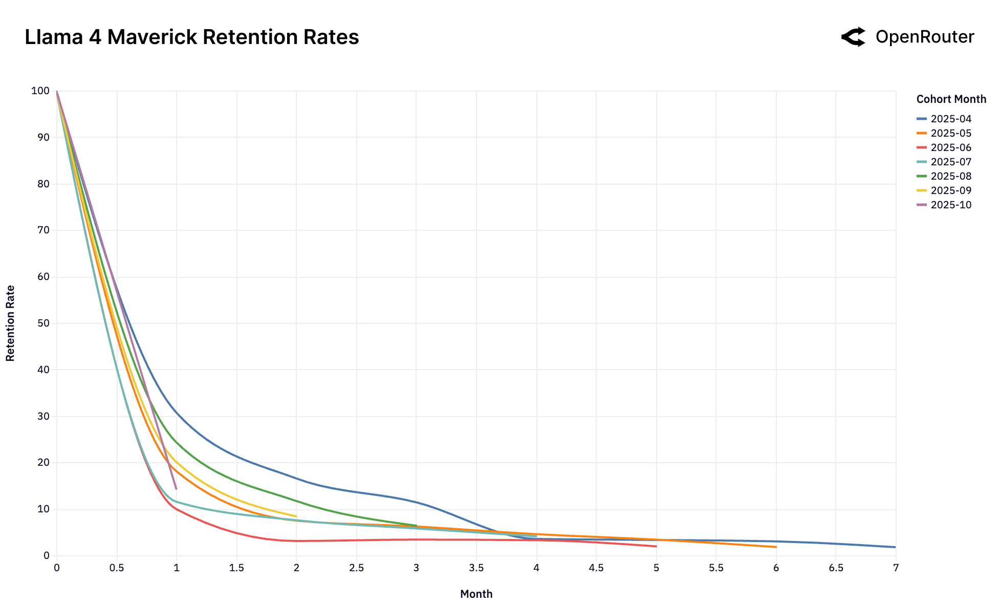
图25：队列留存率。留存率以活动留存率衡量，如果用户在后续月份返回，即使在不活跃期间之后，也会被计数；因此，曲线可能表现出小的非单调波动。
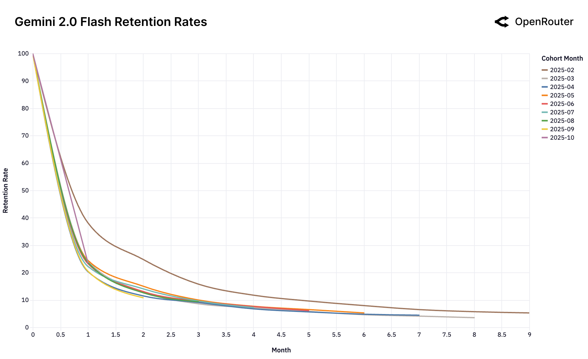
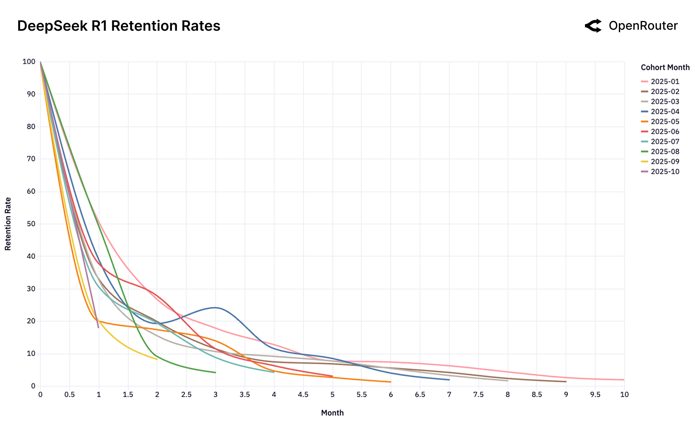
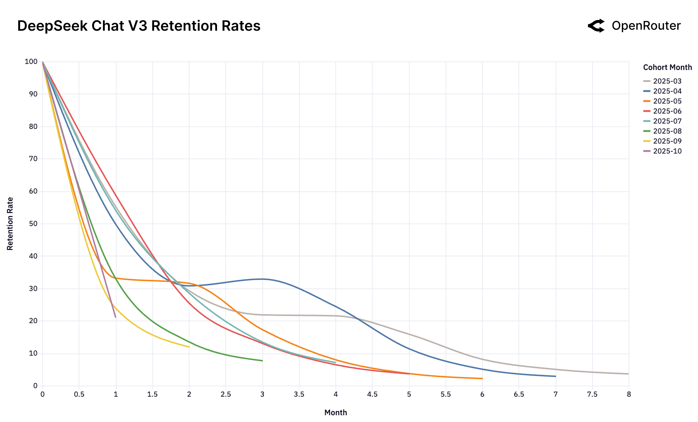
• 留存率作为能力拐点的指标。队列级别的留存模式可作为
模型差异化的实证信号。在一个或多个早期队列中的持续留存表明存在有意义的能力拐点(capability inflection)——一类从不可行转变为可能的工作负载。如果没有这种模式，则表明能力对等和差异化深度有限。
• 前沿窗口的时间约束。竞争格局为模型提供了一个狭窄的时间窗口来获取基础用户。随着后续模型缩小能力差距，形成新基础队列的概率急剧下降。因此，模型与工作负载精确对齐的”灰姑娘时刻”是短暂的，但对长期采用动态至关重要。
总之,基础模型的快速能力转变需要重新定义用户留存。每一代新模型都会带来一个短暂的机会来解决之前未满足的工作负载。当这种对齐发生时，受影响的用户形成基础队列：尽管随后引入了新模型，其留存轨迹仍保持稳定的细分群体。
主导发布异常。OpenAI GPT-4o Mini图表展示了这一现象的极端情况。单个基础队列(2024年7月，橙色线)在发布时建立了主导性的、粘性的工作负载-模型匹配。所有后续队列都在此匹配建立且市场已转移后到达，它们的表现完全相同：流失并聚集在底部。这表明建立这种基础匹配的窗口是唯一的，仅在模型被视为”前沿”的时刻出现。
无匹配的后果。Gemini 2.0 Flash和Llama 4 Maverick图表展示了当初始匹配从未建立时会发生什么的警示故事。与其他模型不同，没有高性能的基础队列。每个队列的表现都同样糟糕。这表明这些模型从未被视为高价值、粘性工作负载的”前沿”。它直接进入了足够好的市场，因此未能锁定任何用户群。同样，DeepSeek的混乱图表尽管总体上取得了压倒性成功，但仍难以建立稳定的基础队列。
回旋效应。DeepSeek模型(图25g和25h)引入了更复杂的模式。它们的留存曲线显示出一种非常不寻常的异常：复活跳跃(resurrection jumps)。与典型的单调递减留存不同，几个DeepSeek队列在初始流失期后显示出明显的留存上升(例如，DeepSeek R1的2025年4月队列在第3个月左右，以及DeepSeek Chat V3-0324的2025年7月队列在第2个月左右)。这表明一些流失的用户正在返回该模型。这种”回旋效应”表明这些用户在尝试替代方案并通过竞争测试确认DeepSeek为其特定工作负载提供最佳且通常更好的匹配后,会返回DeepSeek，这可能是由于专业技术性能、成本效益或其他独特功能的潜在组合。
影响。玻璃鞋现象将留存重新定义为理解能力突破的视角，而不是结果。基础队列是真正技术进步的指纹：它们标记了AI模型从新奇转变为必需的位置。对于构建者和投资者而言，及早识别这些队列可能是预测持久模型-市场优势的最重要信号。
使用模型的成本是影响用户行为的关键因素。在本节中，我们重点关注不同AI工作负载类别如何在成本-使用情况景观中分布。通过检查类别在对数-对数成本与使用图上的聚集位置，我们识别出工作负载如何集中在低成本、高容量区域与高成本、专业化细分市场的模式。我们还参考了与杰文斯悖论(Jevon’s paradox)效应的相似性，即低成本类别通常对应更高的总使用量，尽管我们不试图正式分析悖论或因果关系。
图26所示的散点图揭示了AI用例的明显细分，根据其总使用量(总Token数)与单位成本(每100万Token成本)进行映射。一个关键的初步观察是两个轴都是对数的。这种对数缩放意味着图表上的小视觉距离对应于现实世界中容量和成本的巨大倍数差异。
图表被一条垂直线在成本中位数每100万Token 0.73美元处平分，有效地创建了一个四象限框架来简化跨类别的AI市场。
请注意，这些最终成本与宣传的标价不同。高频工作负载受益于缓存(caching)，这降低了实际支出并产生比公开列出的价格更低的有效价格。显示的成本指标反映了提示和完成Token的混合费率，提供了用户实际支付总额的更准确视图。该数据集还排除了BYOK活动，以隔离标准化的平台中介使用，并避免自定义基础设施设置的扭曲。
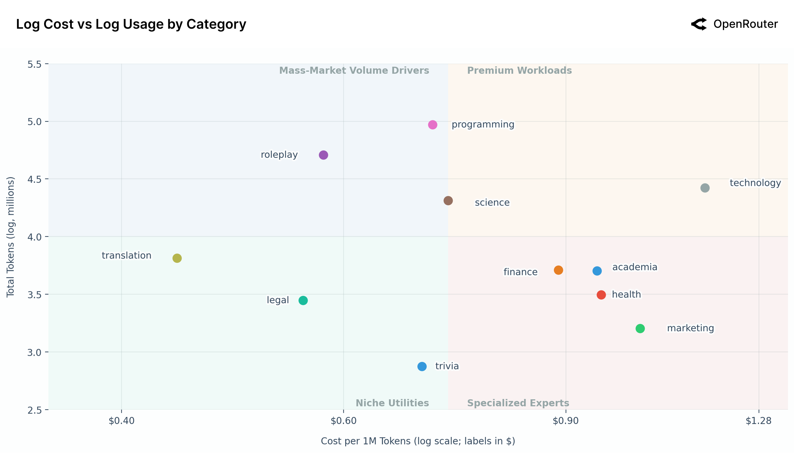
图26：按类别划分的对数成本与对数使用量
高端工作负载(右上)：该象限包含高成本、高使用量的应用，现在包括定位在交叉点的技术和科学。这些代表了有价值的
重度专业工作负载，用户愿意为性能或专业能力支付溢价。技术是一个显著的异常值，其成本远高于任何其他类别。这表明技术作为一个用例（可能与复杂系统设计或架构有关）可能需要更强大、更昂贵的推理模型，但它仍保持着较高的使用量，这表明了其本质上的重要性。
大众市场量级驱动者（左上象限）：这个象限的特点是高使用量和低于或接近平均水平的成本。这个区域由两个大规模用例主导：角色扮演、编程以及科学。
• 编程作为”杀手级专业”类别脱颖而出，展现了最高的使用量，同时拥有高度优化的中位成本。
• 角色扮演的使用量巨大，几乎可以与编程相媲美。这是一个惊人的洞察：面向消费者的角色扮演应用推动的参与度可以与顶级专业应用相当。
这两个类别的庞大规模证实，专业生产力和对话娱乐都是AI的主要大规模驱动力。如前所述，这个象限的成本敏感性正是开源模型找到显著优势的地方。
专业专家（右下象限）：这个象限包含较低使用量、高成本的应用，包括金融、学术、健康和营销。这些是高风险、小众的专业领域。较低的总使用量是合理的，因为人们咨询AI进行”健康”或”金融”相关问题的频率远低于”编程”。用户愿意为这些任务支付显著溢价，可能是因为对准确性、可靠性和领域特定知识的需求极高。
小众实用工具（左下象限）：这个象限包含低成本、低使用量的任务，包括翻译、法律和知识问答。这些是功能性的、成本优化的实用工具。翻译在这个组中拥有最高的使用量，而知识问答的使用量最低。它们的低成本和相对低的使用量表明，这些任务可能已被高度优化、“解决”或商品化，有足够好的替代方案可以低价获得。
如前所述，这张图表中最显著的异常值是技术。它以显著优势占据最高的单token成本，同时保持高使用量。这强烈表明存在一个愿意为高价值、复杂答案（例如系统架构、高级技术问题解决）付费的市场细分。一个关键问题是，这个高价格是由高用户价值（“需求侧”机会）驱动的，还是由高服务成本（“供给侧”挑战）驱动的，因为这些查询可能需要最强大的前沿模型。技术领域的”机会”在于服务这个高价值市场。能够服务这个细分市场的提供商，可能通过高度优化的专业模型，可以捕获一个具有更高利润率的市场。
图27将模型使用量与每100万token成本（对数-对数刻度）进行映射，显示出较弱的整体相关性。x轴为方便起见映射了名义值。趋势线几乎是平的，表明需求相对价格缺乏弹性；价格下降10%仅对应约0.5-0.7%的使用量增长。然而图表上的分散程度很大，反映了强烈的市场细分。出现了两种截然不同的模式：OpenAI和Anthropic的专有模型占据高成本、高使用量区域，而DeepSeek、Mistral和Qwen等开源模型则占据低成本、高使用量区域。这种模式支持一个简单的启发式规则：闭源模型捕获高价值任务，而开源模型捕获大量低价值任务。弱价格弹性表明，即使成本差异巨大也不能完全转移需求；专有提供商在关键任务应用中保持定价权，而开源生态系统则吸收来自成本敏感用户的使用量。
现在让我们在同一地图中放大特定的模型作者。图28与前图类似，但显示了模型作者。出现了四种使用量-成本原型。高端领导者，如Anthropic的Claude 3.7 Sonnet和Claude Sonnet 4，成本约为每100万token 2美元，仍然达到高使用量，表明用户愿意大规模支付更优越的推理和可靠性。高效巨头，如谷歌的Gemini 2.0 Flash和DeepSeek V3 0324，将强大的性能与低于每100万token 0.40美元的价格结合起来，并达到类似的使用水平，使它们成为大量或长上下文工作负载的有吸引力的默认选择。长尾模型，包括Qwen 2 7B Instruct和IBM Granite 4.0 Micro，价格仅为每100万token几美分，但总使用量约为10[2][.][9]，反映了较弱性能、有限可见性或更少集成的限制。最后，高端专家，如OpenAI的GPT-4和GPT-5 Pro，占据高成本、低使用量象限：价格约为每100万token 3.35美元，使用量接近10，它们被少量用于小众、高风险的工作负载，在这些场景中输出质量远比边际token成本更重要。
图27：开源与闭源模型格局：成本与使用量对比（对数-对数刻度）。每个点代表OpenRouter上提供的一个模型，按来源类型着色。闭源模型聚集在高成本、高使用量象限，而开源模型主导低成本、高使用量区域。虚线趋势线几乎是平的，显示成本与总使用量之间的相关性有限。注：该指标反映了提示和补全token的混合平均值，由于缓存，有效价格通常低于标价。BYOK活动被排除在外。
图28：AI模型市场图谱：成本vs.使用量（对数-对数刻度(log-log scale)）。与上图类似，但每个点按模型提供商着色。
[细分市场] [模型] [每百万使用量价格（对数）要点]
[高效巨头] [google/gemini-2.0-flash] [$][0.147] [6.68 低价格和强大的分发能力使其成为默认的大批量主力模型]
[高效巨头] [deepseek/deepseek-v3-0324] [$][0.394] [6.55 以超低成本提供有竞争力的质量，推动大规模采用]
[高端领导者] [anthropic/claude-3.7-sonnet] [$][1.963] [6.87 尽管价格高昂，使用量仍然很高，表明用户偏好质量和可靠性]
[高端领导者] [anthropic/claude-sonnet-4] [$][1.937] [6.84 企业工作负载对于可信赖的前沿(frontier)模型表现出价格非弹性]
[长尾] [qwen/qwen-2-7b-instruct] [$][0.052] [2.91 价格极低但覆盖范围有限，可能是由于较弱的模型-市场契合度]
[长尾] [ibm/granite-4.0-micro] [$][0.036] [2.95 价格便宜但小众，主要在有限的场景中使用]
[高端专家] [openai/gpt-4] [$][34.068] [3.53 高成本和中等使用量，专为最苛刻的任务保留]
[高端专家] [openai/gpt-5-pro] [$][34.965] [3.42 超高端模型，用于高风险的专注工作负载。由于最近才发布，仍处于早期采用阶段]
表3：按细分市场的示例模型。数值从更新的数据集中采样。市场层面的回归几乎持平，但细分市场层面的行为却大不相同。
总体而言，散点图突出表明LLM市场的定价权并不统一。虽然较便宜的模型可以通过效率和集成来驱动规模，但在高风险领域，高端产品仍然有强劲的需求。这种碎片化表明市场尚未商品化(commoditized)，而差异化——无论是通过延迟、上下文长度还是输出质量——仍然是战略优势的来源。
这些观察表明以下几点：
• 在宏观层面，需求是非弹性的，但这掩盖了不同的微观行为。拥有关键任务的企业愿意支付高价（因此这些模型的使用量很高）。另一方面，业余爱好者和开发流程对成本非常敏感，会涌向更便宜的模型（导致高效模型的大量使用）。
• 存在一些杰文斯悖论(Jevons Paradox)的证据：使某些模型非常便宜（且快速）导致人们将它们用于更多的任务，最终消耗更多的总token数。我们在高效巨头组中看到了这一点：随着每token成本的下降，这些模型被集成到各处，总消费量激增（人们运行更长的上下文、更多的迭代等）。
• 质量和能力往往胜过成本：昂贵模型（Claude Sonnet系列、GPT-4）的大量使用表明，如果一个模型明显更好或具有信任优势，用户将承受更高的成本。这些模型通常被集成在工作流程中，在这些流程中，相对于它们产生的价值，成本微不足道（例如，节省开发人员一小时时间的代码远比几美元的API调用更有价值）。
• 相反，仅仅便宜是不够的，模型还必须具有差异化且足够强大。许多定价接近零的开源模型仍然因为它们只是勉强够用但没有找到工作负载-模型契合点或不够可靠，所以开发人员犹豫是否要深度集成它们。
从运营者的角度来看，出现了几种战略模式。像Google这样的提供商大力推行分层产品（最明显的是Gemini Flash和Pro），明确权衡速度、成本和能力。这种分层通过价格敏感度和任务关键性实现市场细分：轻量级任务被路由到更便宜、更快的模型；高端模型服务于复杂或延迟容忍的工作负载。针对用例和可靠性进行优化通常与”降低”价格一样有影响力。更快、专用的模型可能比更便宜但不可预测的模型更受青睐，特别是在生产环境中。这将焦点从每token成本转移到每次成功结果的成本。相对平坦的需求弹性表明LLM还不是商品——许多用户愿意为质量、能力或稳定性支付溢价。差异化仍然具有价值，特别是当任务结果比边际token节省更重要时。
这项实证研究提供了一个数据驱动的视角，展示了LLM实际上是如何被使用的，突出了几个细化关于AI部署常规认知的主题：
我们的分析表明，没有单一模型主导所有使用。相反，我们观察到一个丰富的多模型生态系统，闭源和开源模型都占据了显著份额。例如，尽管OpenAI和Anthropic模型在许多编程和知识任务中领先，但像DeepSeek和Qwen这样的开源模型共同服务了很大一部分总token数（有时超过30%）。这表明LLM使用的未来可能是模型无关的和异构的。对于开发人员来说，这意味着保持灵活性，集成多个模型并为每项工作选择最佳模型，而不是把所有赌注都押在一个模型的优势上。对于模型提供商来说，这强调了竞争可能来自意想不到的地方（例如，社区模型可能会侵蚀你的部分市场，除非你不断改进和差异化）。
一个令人惊讶的发现是角色扮演和娱乐导向使用的巨大量。超过一半的开源模型使用是用于角色扮演和讲故事。即使在专有平台上，在专业用例增长之前，ChatGPT早期使用的很大一部分是休闲和创意性的。这反驳了LLM主要用于编写代码的假设。
emails、或摘要。实际上，许多用户使用这些模型是为了陪伴或探索。这具有重要意义。它凸显了面向消费者的应用程序的巨大机会，这些应用融合了叙事设计、情感参与和互动性。它暗示了个性化的新前沿——能够演化个性、记住偏好或维持长期互动的智能体(agents)。它还重新定义了模型评估指标：成功可能较少依赖于事实准确性，而更多依赖于一致性、连贯性(coherence)和维持引人入胜对话的能力。最后，它为人工智能与娱乐知识产权(IP)之间的跨界打开了道路，在互动叙事、游戏和创作者驱动的虚拟角色方面具有潜力。
大语言模型的使用正在从单轮交互转向智能体推理，模型在多个步骤中进行规划、推理和执行。它们现在不再产生一次性响应，而是协调工具调用、访问外部数据，并迭代优化输出以实现目标。早期证据显示，多步骤查询和链式工具使用正在增加，我们将其代理为智能体使用。随着这种范式的扩展，评估将从语言质量转向任务完成度和效率。下一个竞争前沿是模型能够多有效地执行持续推理，这种转变可能最终会重新定义大规模智能体推理在实践中的意义。
大语言模型的使用正变得越来越全球化和分散化，北美以外地区增长迅速。亚洲在总令牌(token)需求中的份额已从约13%上升至31%，反映出更强的企业采用和创新。与此同时，中国已成为一股主要力量，不仅通过国内消费，还通过生产具有全球竞争力的模型。更广泛的启示是：大语言模型必须具有全球实用性，能够在不同语言、语境和市场中表现良好。下一阶段的竞争将取决于文化适应性和多语言能力，而不仅仅是模型规模。
大语言模型市场似乎还不像商品那样运作：仅凭价格无法解释多少使用情况。用户在成本与推理质量、可靠性和能力广度之间寻求平衡。闭源模型继续占据高价值、与收入相关的工作负载，而开源模型主导低成本和高容量任务。这创造了一种动态平衡——这种平衡的定义较少取决于稳定性，更多取决于来自下方的持续压力。开源模型不断推动有效前沿，特别是在推理和编码领域(例如Kimi K2 Thinking)，快速迭代和开源创新缩小了性能差距。开源模型的每一次改进都会压缩专有系统的定价权，迫使它们通过卓越的集成、一致性和企业支持来证明溢价的合理性。由此产生的竞争是快速移动的、不对称的和持续变化的。随着时间的推移，随着质量趋同加速，价格弹性可能会增加，将曾经差异化的市场转变为更流动的市场。
随着基础模型的飞跃式而非渐进式发展，留存率已成为防御性的真正衡量标准。每一次突破都会创造一个短暂的发布窗口，在此期间，模型可以完美地”契合”高价值工作负载(灰姑娘玻璃鞋时刻)，一旦用户找到这种契合，他们就会留下来。在这种范式中，产品市场契合度等于工作负载-模型契合度：率先解决真正的痛点会推动深度、粘性的采用，因为用户围绕该能力构建工作流程和习惯。然后，切换在技术上和行为上都变得代价高昂。对于构建者和投资者来说，要关注的信号不是增长，而是留存曲线，即通过模型更新保持的基础队列(foundational cohorts)的形成。在一个日益快速变化的市场中，尽早捕获这些重要的未满足需求决定了谁能在下一次能力飞跃后持续存在。
总的来说，大语言模型正在成为跨领域类推理任务的基本计算基础设施(computational substrate)，从编程到创意写作。随着模型的持续进步和部署的扩展，准确了解现实世界的使用动态对于做出明智决策至关重要。人们使用大语言模型的方式并不总是与预期一致，并且在不同国家、不同州、不同用例之间存在显著差异。通过大规模观察使用情况，我们可以将对大语言模型影响的理解建立在现实基础上，确保后续的发展，无论是技术改进、产品功能还是法规，都与实际使用模式和需求保持一致。我们希望这项工作能够为更多实证研究奠定基础，并鼓励人工智能社区在构建下一代前沿模型时持续测量和学习现实世界的使用情况。
本研究反映了在单一平台(即OpenRouter)上以及在有限时间窗口内观察到的模式，仅提供了更广泛生态系统的部分视角。某些维度，如企业使用、本地托管部署或封闭内部系统，仍然超出了我们数据的范围。此外，我们的一些数据分析依赖于代理指标(proxy measures)：例如，通过多步骤或工具调用来识别智能体推理，或从账单而非经过验证的位置数据推断用户地理位置。因此，结果应被解释为指示性的行为模式，而不是对底层现象的确定性测量。
本研究提供了关于大语言模型如何嵌入世界计算基础设施的实证视角。它们现在已成为工作流程、应用程序和智能体系统不可或缺的一部分，正在改变信息的生成、传播和消费方式。
过去一年催化了该领域对推理概念的阶跃式变革。o1级模型的出现使扩展推理(extended deliberation)和工具使用(tool use)成为常态，将评估从单次基准测试转向基于过程的指标、延迟-成本权衡以及编排下的任务成功率。推理已成为衡量模型如何有效规划和验证以提供更可靠结果的标准。
数据显示，LLM生态系统在结构上是多元的。没有单一模型或提供商占据主导地位；相反，用户根据上下文沿着能力、延迟、价格和信任等多个维度选择系统。这种异质性(heterogeneity)不是暂时阶段，而是市场的基本属性。它促进快速迭代并减少对任何单一模型或技术栈的系统性依赖。
推理本身也在发生变化。多步骤和工具链接交互的兴起标志着从静态补全到动态编排(orchestration)的转变。用户正在串联模型、API和工具以完成复合目标，这催生了可称为智能体推理(agentic inference)的新模式。有许多理由相信智能体推理将超越人类推理，如果还没有的话。
从地理角度看，格局正在变得更加分散。亚洲的使用份额持续扩大，特别是中国已成为模型开发者和出口者，Moonshot AI、DeepSeek和Qwen等参与者的崛起证明了这一点。非西方开放权重(open-weight)模型的成功表明，LLM是真正的全球计算资源。
实际上，o1并未终结竞争。恰恰相反，它扩展了设计空间。该领域正在从单一押注转向系统思维，从直觉转向仪器化(instrumentation)，从排行榜增量转向实证使用分析。如果说过去一年证明了智能体推理在规模上是可行的，那么下一年将专注于卓越运营：衡量实际任务完成情况、减少分布变化下的方差，并使模型行为与生产规模工作负载的实际需求保持一致。
R. Appel, J. Zhao, C. Noll, O. K. Cheche, and W. E. Brown Jr. Anthropic economic index report: Uneven geographic and enterprise AI adoption. arXiv preprint arXiv:2511.15080, 2025. URL https://arxiv.org/abs/2511.15080
A. Chatterji, T. Cunningham, D. J. Deming, Z. Hitzig, C. Ong, C. Y. Shan, and K. Wadman. How people use chatgpt. NBER Working Paper 34255, 2025. URL https://cdn.openai.com/pdf/a253471f-8260-40c6-a2cc-aa93fe9f142e/economic-research-chatgpt-usage-paper.pdf
W. Zhao, X. Ren, J. Hessel, C. Cardie, Y. Choi, and Y. Deng. WildChat: 1M ChatGPT interaction logs in the wild. arXiv preprint arXiv:2405.01470, 2024. URL https://arxiv.org/abs/2405.01470
OpenAI. OpenAI o1 system card. arXiv preprint arXiv:2412.16720, 2024. URL https://arxiv.org/abs/2412.16720
W. L. Chiang, L. Zheng, Y. Sheng, A. N. Angelopoulos, T. Li, D. Li, H. Zhang, B. Zhu, M. Jordan, J. Gonzalez, and I. Stoica. Chatbot Arena: An open platform for evaluating LLMs by human preference. arXiv preprint arXiv:2403.04132, 2024. URL https://arxiv.org/abs/2403.04132
J. Wei, X. Wang, D. Schuurmans, M. Bosma, E. H. Chi, F. Xia, Q. Le, and D. Zhou. Chain-of-thought prompting elicits reasoning in large language models. Advances in Neural Information Processing Systems, 35:24824–24837, 2022. URL https://proceedings.neurips.cc/paper_files/paper/2022/hash/9d5609613524ecf4f15af0f7b31abca4-Abstract-Conference.html
S. Yao, J. Zhao, D. Yu, N. Du, I. Shafran, K. Narasimhan, and Y. Cao. ReAct: Synergizing reasoning and acting in language models. International Conference on Learning Representations (ICLR), 2023. URL https://arxiv.org/abs/2210.03629
A. Grattafiori, A. Dubey, A. Jauhri, A. Pandey, A. Kadian, A. Al-Dahle, A. Letman, A. Mathur, A. Schelten, A. Yang, A. Fan, et al. The Llama 3 Herd of Models. arXiv preprint arXiv:2407.21783, 2024. URL https://arxiv.org/abs/2407.21783
DeepSeek-AI, A. Liu, B. Feng, B. Xue, B. Wang, B. Wu, C. Lu, C. Zhao, C. Deng, C. Zhang, et al. DeepSeek-V3 technical report. arXiv preprint arXiv:2412.19437, 2024. URL https://arxiv.org/abs/2412.19437
这项工作得益于OpenRouter团队开发的基础平台、基础设施、数据集和技术愿景。特别是Alex Atallah、Chris Clark、Louis Vichy提供了工程基础和架构指导，使本研究的探索成为可能。Justin Summerville在实现、测试和实验改进方面提供了基础支持。其他贡献包括Natwar Maheshwari的发布支持和Julian Thayn的设计编辑。
Malika Aubakirova(a16z)担任主要作者，负责实验设计、实现、数据分析和论文的完整准备。Anjney Midha提供了战略指导并塑造了总体框架和方向。
早期的探索性实验和系统设置由Abhi Desai在a16z实习期间提供支持。Rajko Radovanovic和Tyler Burkett在a16z全职任职期间，提供了有针对性的技术见解和实际协助，加强了工作的几个关键组成部分。
所有贡献者都参与了讨论，提供了反馈，并审阅了最终手稿。
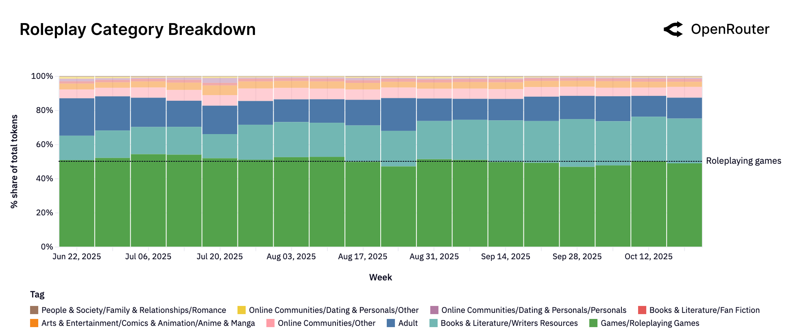
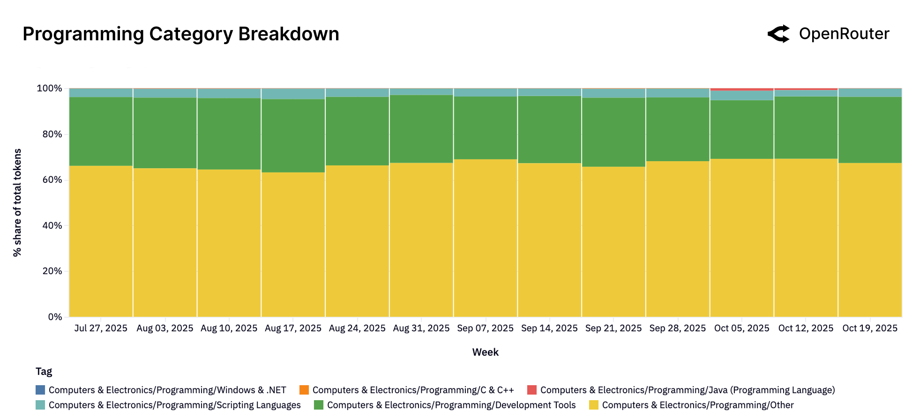

图29：主要领域的类别子组成。所有三个领域(角色扮演、科技、编程)都表现出独特的内部模式。